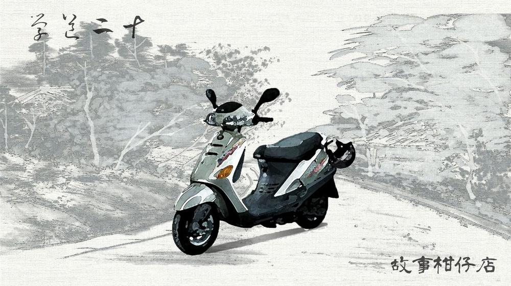

玄墨行者．學道（二十一）：土地公

深怕被抓回去似的，拾兒剛向蒙叟告辭，隨即抄起老早就收拾好的包包，套上師父的舊長袍，揪著那張根本是玩笑的手繪地圖，一溜煙出門了。
「這是在搞我嗎……」群山間有好多條如師父畫的小溪，拾兒不確定往哪裡走才好，只好依著直覺亂走，盪藤走壁，躍石穿林，居然也真的讓他找到了地圖上畫的小橋。
「太神了，這麼爛的地圖……。」拾兒的碎念，聽不出是讚嘆還抱怨。
抵橋彼岸，穿過一片矮樹叢，他來到一條人不算多也不算少的小鎮，堪能會車的小路旁，有兼賣烤香腸及黑輪米血的小攤，還有載滿水蜜桃的發財車，懸掛著「不純砍頭」的紙板。
經過拾兒的行人，不約而同打量著他。「看什麼啊？」拾兒心想。他掏掏口袋零錢，買了支香腸，當場吃了起來，邊吃邊端詳地圖。
「少年仔，你怎麼穿成這樣？擱留長頭髮，飄撇呢！」阿桑熟練翻動火爐上的香腸，熱情招呼著他。
拾兒恍然大悟，原來是自己穿得不像一般人，才遭來異樣眼光。
「你在看啥？地圖喔？」阿桑探頭過來，邊掏出手機，「少年仔，你跟不上時代，像我這種老歲仔都知道用估狗妹，你擱在看地圖。」
一看手機螢幕密密麻麻的街道巷弄，拾兒大驚，這未免太複雜了！相形之下，師父畫的地圖果真容易許多。至今才懂師父苦心，拾兒不禁有點慚愧。
「來啦，你要找啥？我幫你找。」阿桑很熱心放大畫面又縮小，「欲呷看麥黑輪嗎？好呷喔！配湯啦！這湯我自己熬的。」
又被推銷了一支黑輪，手還端了碗湯。阿桑邊看著手繪地圖邊滑螢幕，點來點去，端詳一陣。「少年仔，我看這張地圖畫旁邊有客運車牌，你走右邊這條，勿是左邊喔，左邊是往山上去。」
阿桑指著前方岔路，殷殷叮囑。拾兒點點頭，臨走前又被推銷了兩支香腸。
「我看滿遠的，我給你打包。」阿桑手腳利索用紙袋裝好，遞了過來。拾兒真沒想到，居然在這小攤子花了一百元。
他循著右邊岔路往前走，這路是愈來愈細，兩側是插滿翠綠秧苗的水田。別說房子了，連個人也沒有。此時退也不行，他只好邊走邊東張西望，期望那間屋子趕緊出現。
忽然，他止住了腳步，視線落在路旁一座小小的土地公廟。說是廟，其實也只有半人高。香爐裡插著高矮不一的香，白鬍子神像咧嘴笑得十分慈祥。
難道師父要我來找這間廟？拾兒心想。但他繞來繞去，就是不見人影。
心浮氣躁翻過地圖，背面那行字提醒了他：四下無人，不妨彈首〈似是故人來〉。
拾兒放下輕便行囊，隨意坐在路旁石頭上，將一頭及肩捲髮隨意紮起，端起醉妖弦彈奏起來。
樂聲悠揚，幾隻小麻雀降落下來，圍靠著拾兒，踏著細碎小步，像是聆聽一場音樂會。偶爾也引吭啾啾幾聲，噗噗拍翅，讓曲子增色不少。原本趴在遠處午睡的黃狗，也咚咚咚跑了過來，瞇起眼睛翻著雪白肚皮，撓撓臉，很享受的模樣。
「叭叭叭～～～」忽然一陣刺耳喇叭破了曲兒，一輛藍綠色老迪爵小小甩了尾，煞氣停在拾兒面前，嚇飛了麻雀，黃狗又咚咚咚跑掉了。
一個年紀約五十多歲的大叔脫下瓜皮帽，從寬鬆花襯衫胸前口袋掏出排梳，對著照後鏡將狂野髮絲往後梳得服服貼貼。
大叔隨意停了車，招呼道：「你是新的天璣喔？歹勢，剛剛溝仔口有地縛靈要遷戶口，我去處理一下。聽到你彈琴聲我才衝返來，差點雷殘。」
新的天璣？拾兒愣了兩秒，才反應過來，「呃，對。你認識我師父嗎？你是哪位？」
「你師父不是挫起來了？」大叔毫不思索回應。
「對，他過世了。所以你是哪位？我師父是要我來找你嗎？」
「天璣沒……喔，我是說舊的天璣沒跟你說喔？我是福德正神啊，土地公啦！」大叔從機車龍頭下抽出一瓶青草茶，咕嚕咕嚕乾了半罐。
啊？
眼前這位大叔梳著烏亮油頭，水洗絲花襯衫和控吧啦褲被風吹得嘩嘩響，頸上一圈比姆指還粗的金項鍊，雙腳套著夾腳拖。
拾兒轉頭看看廟裡神像，一臉懵懂。
「那是我的螢幕形象啦，知否？天庭當初看我太緣投不夠威嚴，另外設計的啦！」大叔乾了剩下的青草茶，一臉痛快。
－－－－－
#新連載依舊兩天一篇每晚準時六點半喔
#請人客多多指教
#記得去各大書店買我們的書故事柑仔店哩
